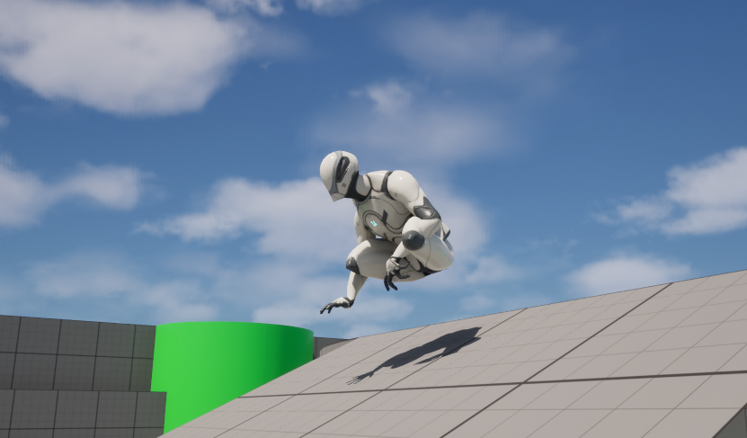
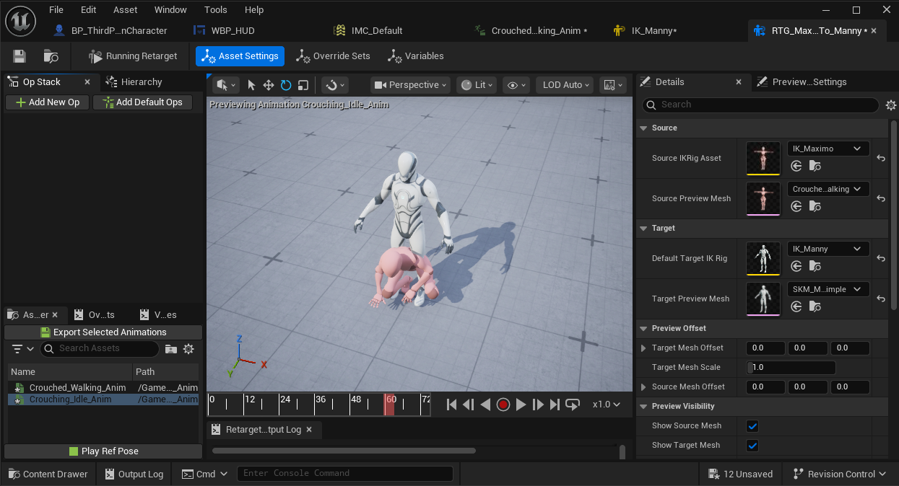

UNREAL ENGINE 5 • IN DEVELOPMENT
Shotgun Samurai
A third-person game project that begins during a hunting trip in the Colorado wilderness before transporting the player into mid-1500s Japan.
Colorado Wilderness Environment
This space will eventually feature a finished environment screenshot from the game's opening.
OVERVIEW
The idea
Shotgun Samurai started as a project centered around movement, exploration, atmosphere, and the contrast between two very different settings.
The opening is planned around a hunting trip in the Colorado mountains. The player can explore, hunt, gather resources, interact with equipment, and spend time in the wilderness before the main story begins.
After an encounter with a grizzly bear, the player is knocked unconscious near a stream and later wakes inside a wooden building in mid-1500s Japan.
The project is currently focused primarily on building and testing the player's core movement and gameplay systems before larger environments are created.
CURRENT STATUS
Building the foundation first
Movement
Building and refining the movement systems that control how the player runs, crouches, dodges, stops, and recovers.
Animation
Connecting movement behavior to character animations, retargeting animation assets, and fixing problems between standing and crouched states.
Level Design
Planning the Colorado opening and later Japanese environment while the gameplay foundation is developed.
GAMEPLAY SYSTEMS
Movement testing
Much of the current development work is focused on making movement feel consistent across different player states.

A stamina-based sprint system with stamina drain, regeneration delay, low-stamina slowdown, and exhaustion behavior.
Toggle crouching with adjusted movement speed, camera height, animations, and interaction with sprinting.
Directional dodging using movement input, camera-relative direction, character rotation, and separate behavior while crouched.
Stamina behavior changes depending on movement, exhaustion, remaining stamina, and whether the character is stationary.
ANIMATION
Retargeting and debugging
Animation work has involved testing crouched movement, retargeting animations, and fixing how animations interact with the player's movement states.

DEVELOPMENT PROCESS
A large part of the project so far has been iterative: build a system, test it, identify an issue, adjust the Blueprint or animation behavior, and test it again. That process has been especially important for movement, crouching, dodging, animation transitions, and character positioning.
PLANNED ENVIRONMENT
Colorado wilderness
The game's opening environment has not been built yet. This section will be updated as level development begins.
Colorado Mountains
Planned screenshots will show the hunting area, campsite, wilderness paths, stream, and surrounding mountain environment.
Hunting
The opening is planned to allow several days of free hunting and exploration before the story event.
Exploration
Wilderness areas, points of interest, photography, gathering, and optional activities are planned throughout the opening area.
Camp
The player arrives by truck and camps overnight, helping establish the slower opening pace before the main story begins.
PLANNED ENVIRONMENT
Mid-1500s Japan
The second major setting is also still in the planning stage and will receive its own screenshots as the environment is developed.
Japanese Village
This area is planned as the player's first introduction to the historical setting after waking inside a wooden building and stepping into the village.
First Arrival
The player wakes bandaged inside a wooden building after the transition from Colorado.
Village Introduction
Leaving the building introduces the player to villagers, unfamiliar language, architecture, and the new setting.
Historical Setting
The environment is intended to establish the contrast between the player's modern origin and the historical world they have entered.
DEVELOPMENT GALLERY
Current progress
WHAT I'M LEARNING
Developing through iteration
Shotgun Samurai is helping me learn how seemingly separate systems affect each other. Movement, animation, camera behavior, level layout, player feedback, and environmental design all need to work together.
It has also given me experience debugging systems that technically work but do not yet feel correct, which often requires testing several approaches instead of stopping at the first functional solution.
As development moves forward, the project will shift from mostly gameplay-system prototyping toward level design, environment building, encounters, exploration, and more complete gameplay sequences.
NEXT PROJECT
ImpactSim
Explore my interactive disaster and extreme-energy simulation project.
View ImpactSim